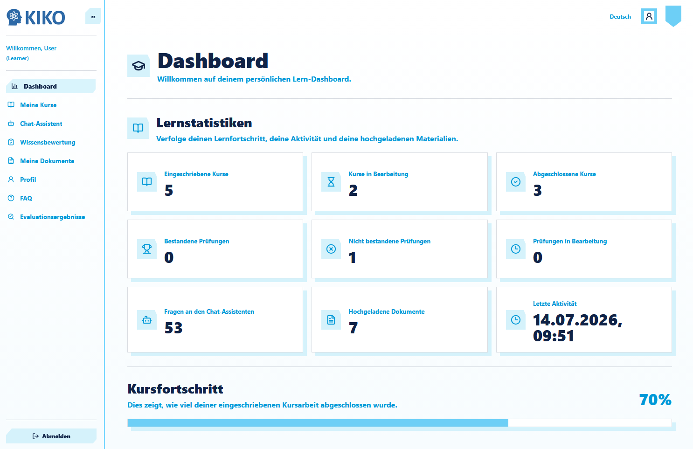
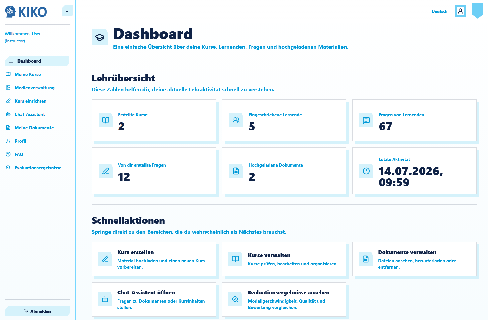
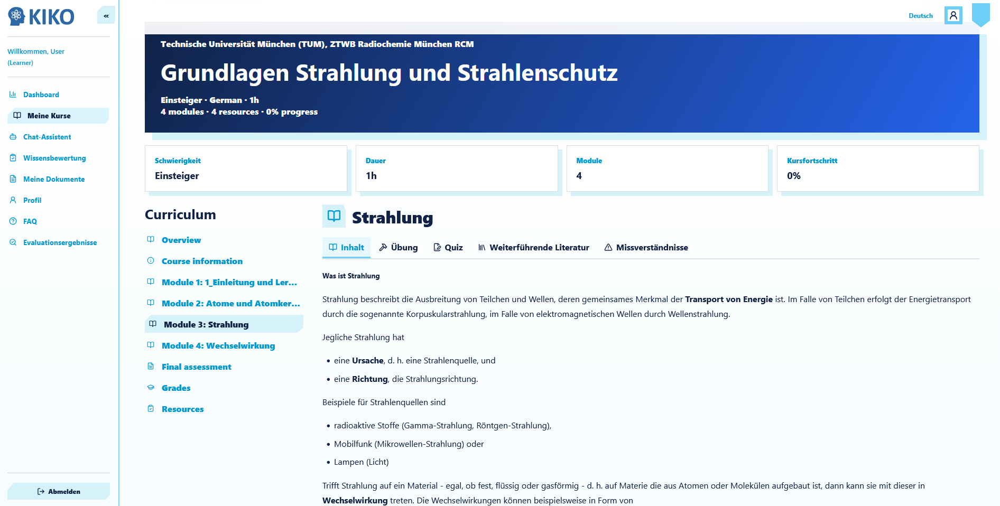
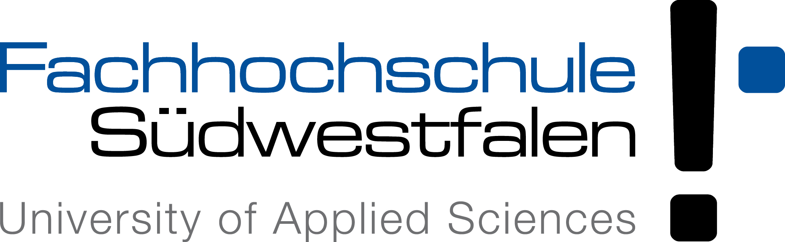
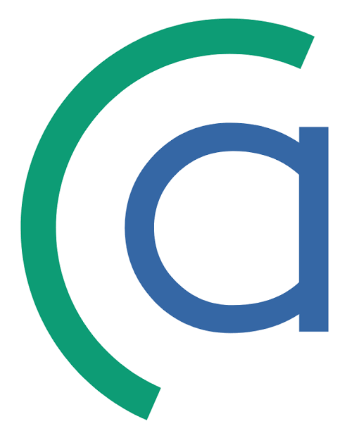
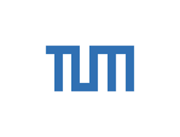
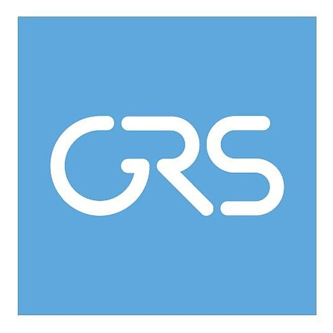
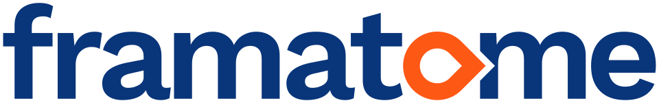

Das Wissen für den Rückbau — bewahrt, vermittelt, weitergegeben.
KIKO ist eine KI-gestützte Lern- und Wissensplattform für die Stilllegung kerntechnischer Anlagen. Sie konserviert Expertenwissen, macht es über natürliche Sprache zugänglich und vermittelt es — angepasst an den Kenntnisstand jedes Einzelnen.
Der Rückbau läuft über Jahrzehnte. Das nötige Wissen darf nicht verloren gehen.
Die Stilllegung kerntechnischer Anlagen verlangt geschultes Personal und dauerhaft verfügbare Kompetenzen — bei gleichzeitigem Fachkräftemangel. KIKO bündelt das Fachwissen zum Rückbau, hält es aktuell und gibt es über moderne Sprachmodelle gezielt an alle weiter, die es brauchen.
Wissenserhalt
Fachkompetenz von Experten wird in KI-Modellen konserviert und bleibt langfristig abrufbar — auch dann, wenn Wissensträger die Branche verlassen.
Nachwuchsförderung
Studierende, Promovierende sowie Quer- und Neueinsteiger arbeiten sich schneller ein — begleitet von KI-Assistenten, die wie Mentoren zur Seite stehen.
Internationalisierung
Wissen lässt sich in andere Sprachen überführen und in multilateralen Vorhaben nutzbar machen — eine Grundlage für internationale Kooperation.
Die Plattform ausprobieren
Die erste Version von KIKO ist eine Lernplattform mit Kursen in zwei Perspektiven: einer Ansicht für Lehrende und einer für Lernende. Zum Lernmaterial lassen sich Fragen stellen, typische Fehlvorstellungen werden sichtbar gemacht, und Übungs- wie Testfragen werden mit KI-Feedback beantwortet.
- Zwei Perspektiven — eine Dozenten- und eine Lernendenansicht für denselben Kurs.
- Kurse mit Lernmaterial — strukturierte Inhalte, zu denen direkt Fragen gestellt werden können.
- Typische Fehlvorstellungen — häufige Missverständnisse werden benannt und aufgelöst.
- Übungs- & Testfragen — mit individuellem KI-Feedback zur eigenen Antwort.
Ein Lernsystem, das sich an den Menschen anpasst
Information wird nicht einfach präsentiert, sondern am individuellen Bedarf ausgerichtet — für einen Wissenszuwachs mit maximalem Lerneffekt.
Niveauangepasstes Lernen
Die KI begleitet Anwender entlang ihres Wissensstands und gibt Hilfestellung zu allen relevanten Themen.
Individuelles KI-Feedback
Themenspezifisches Feedback schließt gezielt Wissenslücken — es entsteht eine optimale Lernkurve.
Wissenskammer
Bestehende Quellen werden um das Wissen relevanter Experten angereichert — eine lebendige, wachsende Wissensbasis.
Aktive Lernagenten
Autonome KI-Agenten erhalten das Fachwissen von Personen und greifen als digitale Dozenten in den Lernprozess ein.
Quellentreue
Jede Ausgabe lässt sich hinterfragen: Originalabschnitte und die verwendeten Quellen werden zum Nachprüfen angezeigt.
Open Source
MIT LicenseKIKO setzt auf quelloffene Sprachmodelle — anpassbar an den Rückbau, transparent und international anschlussfähig.
So sieht die Plattform aus
Zwei Perspektiven auf denselben Kurs — eine für Lernende, eine für Lehrende. Die Screenshots werden hier ergänzt.



Ein Verbund aus Forschung und Praxis
KIKO ist ein Verbundprojekt dreier geförderter Partner, eng begleitet von zwei assoziierten Partnern aus Forschung und Industrie.

FH Südwestfalen
Leitung · gefördert
actimondo eG
gefördert
TU München · RCM
gefördert
GRS gGmbH
assoziiert